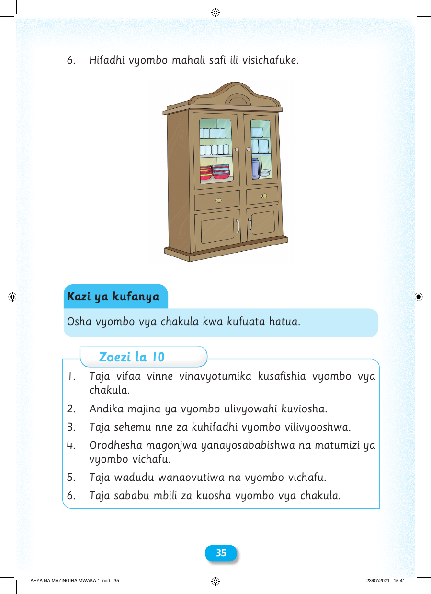

6. Hifadhi vyombo mahali safi ili visichafuke. Kazi ya kufanya Osha vyombo vya chakula kwa kufuata hatua. Zoezi la 10 1. Taja vifaa vinne vinavyotumika kusafishia vyombo vya chakula. 2. Andika majina ya vyombo ulivyowahi kuviosha. 3. Taja sehemu nne za kuhifadhi vyombo vilivyooshwa. 4. Orodhesha magonjwa yanayosababishwa na matumizi ya vyombo vichafu. 5. Taja wadudu wanaovutiwa na vyombo vichafu. 6. Taja sababu mbili za kuosha vyombo vya chakula. 3355 AFYA NA MAZINGIRA MWAKA 1.indd 35 23/07/2021 15:41